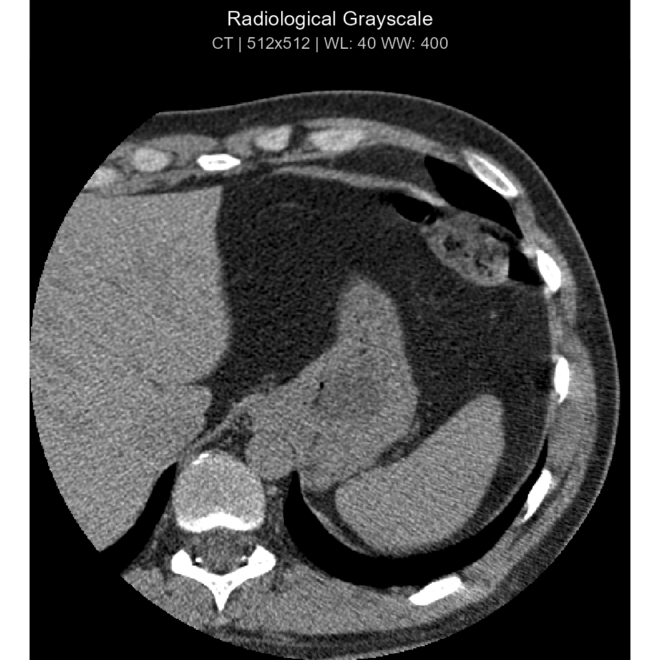
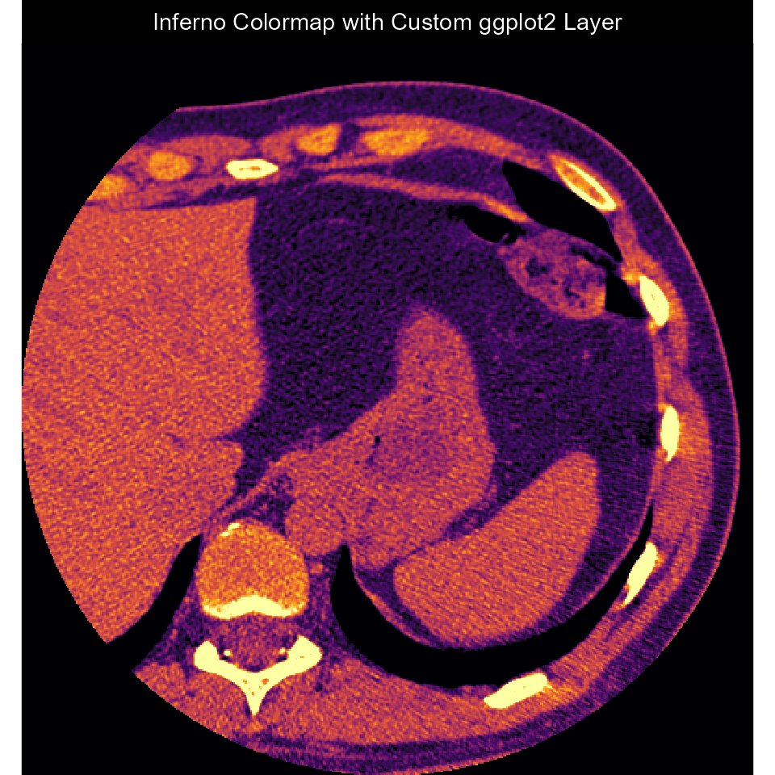
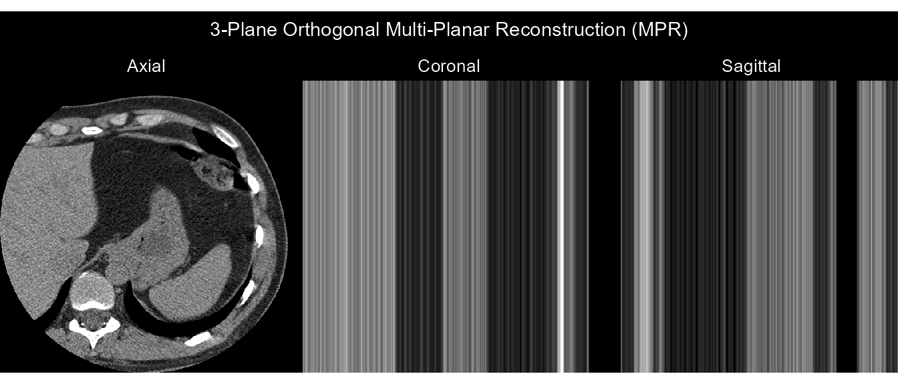
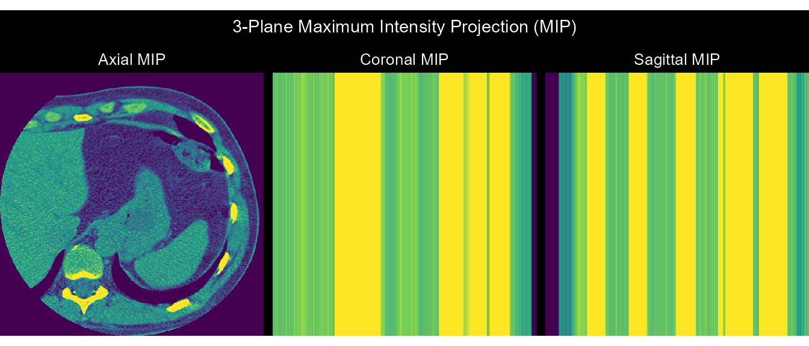

DICOM Image Visualization: ggplot2, Clinical Windows, Shiny, and 3D Volumes
Source:vignettes/image-visualization.Rmd
image-visualization.RmdOverview
dicomtk provides a complete medical image visualization
pipeline built on native C++17 pixel extraction
(read_dicom_pixels()), VOI LUT window/level presets
(dicom_window()), composable ggplot2 rendering
(plot_dicom() / ggdicom()), an interactive
Shiny viewer (dicom_viewer()), and 3D
volumetric rendering (render_volume()).
library(dicomtk)
library(ggplot2)
#> Warning: package 'ggplot2' was built under R version 4.5.3
dcm_file <- system.file("extdata", "example.dcm", package = "dicomtk")Extracting Pixel Data & Applying Clinical Window Presets
read_dicom_pixels() decodes 8-bit, 16-bit, or 32-bit
monochrome and RGB pixel streams (including RLE-compressed frames) and
applies Modality LUT rescaling (RescaleSlope and
RescaleIntercept):
px <- read_dicom_pixels(dcm_file)
dim(px)
#> [1] 512 512
# Apply clinical window presets ("auto", "brain", "stroke", "subdural",
# "lung", "mediastinum", "abdomen", "liver", "bone", "angio")
win_brain <- dicom_window(px, preset = "brain")
range(win_brain)
#> [1] 0 1Composable ggplot2 Rendering (plot_dicom()
& ggdicom())
plot_dicom(dcm_file, window = "auto", palette = "gray", title = "Radiological Grayscale")
# Add custom ggplot2 annotations on top of ggdicom()
ggdicom(dcm_file, palette = "inferno", annotate = FALSE) +
labs(title = "Inferno Colormap with Custom ggplot2 Layer")
3D Volumetric Multi-Planar Reconstruction (MPR) & Maximum Intensity Projection (MIP)
series <- read_dicom_series(c(dcm_file, dcm_file, dcm_file))
series
#> ℹ DICOM Series: 512 x 512 x 3 slices (3 files)
# 3-Plane Orthogonal MPR
render_volume(series, method = "mpr")
# 3-Plane Maximum Intensity Projection (MIP)
render_volume(series, method = "mip", palette = "viridis")
Interactive Shiny Viewer
In an interactive R session, call dicom_viewer() to
launch a full multi-slice DICOM workstation in your browser or IDE
viewer pane:
if (interactive()) {
dicom_viewer(dcm_file)
}